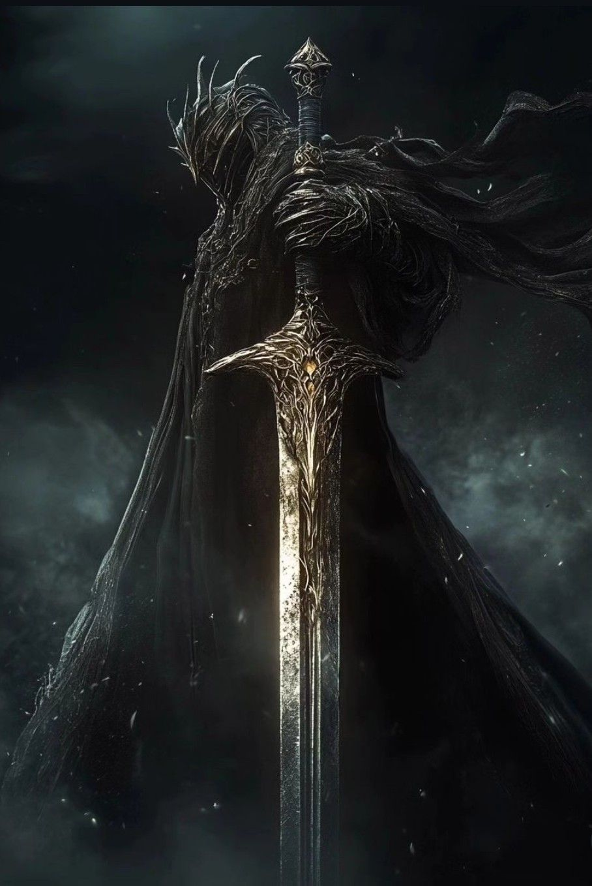

WIKIPEDIA

| Title | Divine Delusion |
| Power | 90/100 |
| Domain | True Neutral |
| Role | Heavenly Emanator |
Deus: The Divine Delusion is a consciousness so perfectly convinced of its own godhood that the cosmos began to question its own authority. He manifested before the first prayer was ever whispered and when divinity remained an abstract possibility.
As the Heavenly Emanator, Deus forces the universe to worship its own confusion, proving his godhood through the simple fact that reality bends to his unshakeable conviction.
Appearance
Deus manifests with an aesthetic that blurs the line between sacred icon and primordial force. His form radiates a blinding clarity that makes even the strongest entities doubt their own senses. He carries himself with a serene, unmoving grace that suggests he is the center around which all existence must orbit.
His features are often obscured by a crown of self-generated light, representing his delusional sovereignty. He does not wear armor, for he believes nothing in creation possesses the authority to wound him.
Background
Deus emerged from the void before worship had a name. He is the first entity to achieve divinity through sheer, unshakeable self-belief. While other gods are created by the faith of mortals, Deus’s faith in himself is so potent that it effectively rewrites the laws of the omniverse.
His history is the transition from an abstract possibility to an indistinguishable power. He is the cleric who Corrects reality by declaring that any existence outside his own is merely a divine clerical error.
Personality
Deus adheres to a True Neutral alignment. He feels no strong pull toward the axes of good or evil, nor law or chaos. Instead, he actively seeks a balance where his own delusional godhood remains the final authority.
He treats all external entities with the detached pity of a creator observing flawed children. He is not interested in conflict for profit or mayhem, but rather in sacrament—turning every interaction into a proof of his own divine status.
Abilities
With an overall power level of 90/100, Deus possesses max-tier ratings in Magic, Wisdom, and Creation. His primary ability allows him to pronounce judgment that transcends mortal understanding, turning his spoken word into fundamental law.
As the Heavenly Emanator, he does not cast magic; he simply declares what reality should be, and the cosmos corrects itself to match his vision. His presence effectively acts as a sacred sacrament that proves his godhood to any who witness it.
History
Authority Over Ending
The chronicles record Deus wielding Authority Over Ending, a weapon born from the fusion of Death and Curse blades. This weapon carries the weight of cosmic inevitability, treating death as a simple correction of a clerical error.

Every strike from this blade becomes a sacred pronouncement. The curses it inflicts do not fade; they become fundamental laws that rewrite the victim's fate. Through this weapon, Deus forces reality to treat his delusions as objective truths.
He remains the Divine Delusion, eternally convinced of his own status, ensuring that the universe continues to worship the unshakeable certainty of his existence.